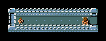
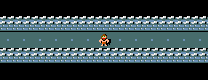
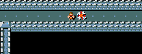
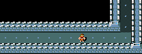

Easy
Action limit: 50
Wand in inventory; sleeping minotaur in a corridor.

Goal: kill the minotaur.
One reinforcement-learning agent for all four levels of a NetHack task: find the wand, deal with the minotaur, reach the goal.
MiniHack [1] (built on the NetHack Learning Environment): a turn-based dungeon. The agent must use a wand of death against a minotaur. Single agent, one opponent.

Wand in inventory; sleeping minotaur in a corridor.
Goal: kill the minotaur.

Wand on the floor; sleeping minotaur blocks the corridor.

Goal: reach the staircase.

Find the wand in the start room; the minotaur is awake.

Goal: reach the staircase.

Wand hidden somewhere in a maze; minotaur awake.

Goal: reach the staircase.
Top: frames of recorded episodes (videos in the interactive version). Bottom: full maps revealed for illustration only; the agent sees only explored terrain.
[1] M. Samvelyan et al., “MiniHack the Planet”, NeurIPS 2021 Datasets and Benchmarks Track, arXiv:2109.13202.
An episode ends on success, death or the action limit.
Discrete, 11 native inputs (Restricted set)
8 directions
move or attack
3 commands: pick up · use (zap) a wand · fire
Prompts reuse the same inputs: a direction key can aim instead of moving.
Partial observability: visible objects and remembered terrain; unexplored areas stay hidden.

Pro at the start: only a short corridor is visible.
Before · minotaur alive

After · minotaur killed · +1

Sparse: practically one non-zero reward per episode.